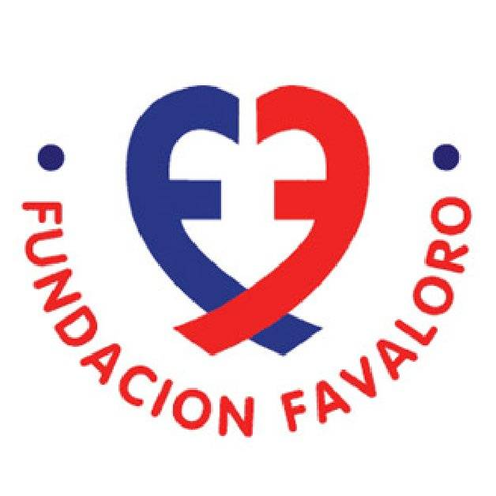

Tribute to René Favaloro
King of hearts
A brief summary of René Favaloro's life
Family anf childhood
Rene Favaloro was born on July 14, 1923, in La Plata, the capital city in the Province of Buenos Aires. His father was Juan B. Favaloro, a carpenter, and his mother was Ida Y Raffaelli, a dressmaker. He had a brother, who also became a surgeon,but was an uncle who was a physician who inspired him to become a doctor.In 1941 he received his bachelor’s degree from Rafael Hernández National College, after which he joined the Argentine Army, to serve during the World War II. After being discharged as a Lieutenant in 1945
Career
He started his medical studies in 1945 at the University of La Plata. He received his degree in 1949, following which he went to Polyclinical Hospital in La Plata to serve an internship.In 1950 he moved to a poor village named Jacinto Arauz,soon he became interested in developments in cardiovascular intervention and also developed an interest in thoracic surgery.During one visit to La Plata, he met Professor Mainetti who suggested to him to go to Cleveland Clinic in the United States.At Cleveland Clinic, he served as apprentice to Dr. Delos M. Cosgrove, who was also the co-chairperson of the center. He also studied with Mason Sones, who is considered the father of coronary cineangiography.In 1967, Rene Favaloro performed heart bypass operation on a 51-year-old woman. Thus Favaloro’s surgery became the first planned heart bypass operation to be reported.Favaloro’s technique involved first stopping the heart and then taking a section of vein from the leg of the patient. After that, one end was sewed into the aorta while the other end was attached to the blocked artery. This technique, which was the fundamental work of Favaloro’s career, became quite famous, and within a year 171 surgeries were performed at the Cleveland Clinic alone. In 1971, he gave up his career in Cleveland Clinic and returned to Argentina as he had always wanted to serve the people of his country. He soon realized the importance of having an institution of similar excellence to Cleveland Clinic and began collecting funds.
Favaloro Fundation
In 1975, he established the famous Favaloro Foundation with the support of the Cleveland Clinic. He not only trained doctors from all over Argentina as well as the Americas, but also conducted several courses, seminars and conferences, to improve the level of standard of his institution. The ‘Basic Investigation Laboratory’ was established by him in 1980, which was financed with his own money. Later, in 1992, the ‘Favaloro Foundation Institute of Cardiology’ was also opened in Buenos Aires. It started providing highly specialized services in the fields of cardiology, cardiovascular surgery, as well as heart, lung, and bone marrow transplants along with many other areas. He also performed numerous bypass surgeries on poor and needy patients for free, though the costs were extremely high. He felt that for him, it was a moral obligation.He strongly emphasized on the prevention of diseases and spread awareness on how following basic rules of hygiene would help in reducing diseases as well as the mortality rate. His institution, to fulfill his objective, used to have illness detection and prevention programs. Because of their skilled professionals, specialized technology, and medical ethics, the Favaloro Foundation still stands as one of the largest institutes for cardiology all over the Americas.
Scientific legacy
In early 1967 Favaloro studied the possibility of using the saphenous vein in coronary surgery, practicing with his ideas in may of that year.The standarization of this tecnique, called bypass or myocardial revascularization surgery was the main work of his career and the one that gave him international prestige, since the procedure radically changed the history of coronary decease. In 1970 edited a book called Surgical treatment on coronary arteriosclerosis,wich also was edited in spanish under the name Tratamiento quirúrgico de la arteriosclerosis coronaria.
Personal life
In 1951 Rene Favaloro married Maria Antonia Delgado, with whom he had a relationship since they were in high school.They didn’t have any children. Favaloro was quite frustrated at the state of the world. He realized that though his interest was only in curing people and creating a better world, he still didn’t receive the necessary support or funds from the governmental agencies for this noble endeavor. Disillusioned and sad, he shot himself dead at his home in Buenos Aires on July 29, 2000. The whole country was aggrieved at his death. Though his death was tragic, his life had taught humanity a lesson in selfless service.After his death, became known that Favaloro had left seven letters in his apartment whose content was partially known.In one of them,addressed to the "competent autorithies",he made it clear that his decision to take his own life, and explained the economic crisis that the Favaloro foundation was going through was the reason behind his decision.
"Must be understood we are all educators.Every act in our daily lives has,sometimes,singificant implications.So let us try to teach by example."
(Conference “Ciencia Educación y Desarrollo”, University of Tel Aviv, may 1995)
If you want to know more about him you can visit the Favaloro Fundation page or his Wikipedia Entry.